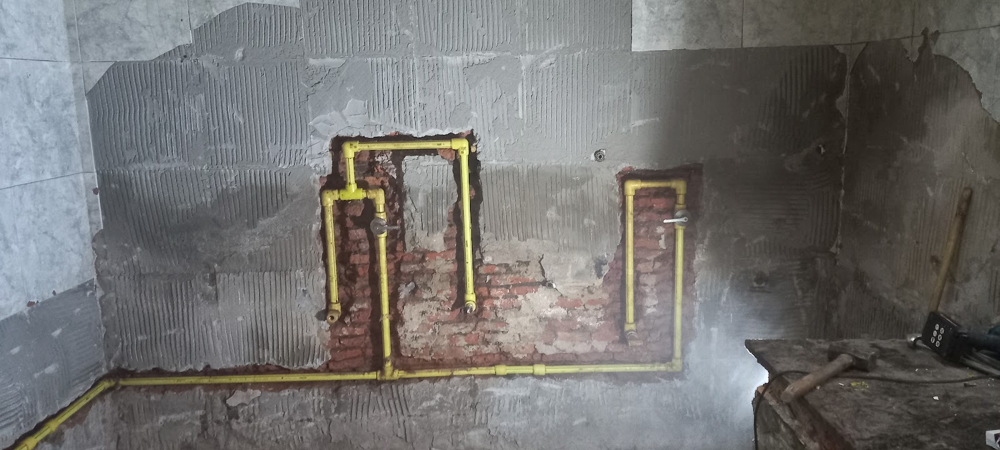
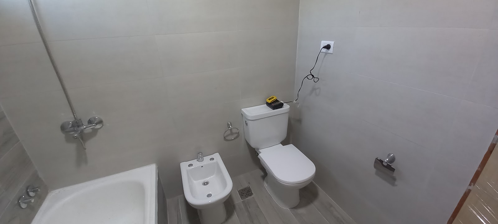

Destapaciones
Revisión del problema y trabajo con herramientas preparadas para llegar al punto de la obstrucción.
Ficha de obra · Tandil
Urgencias de plomería y gas en Primera Junta 1507, con 4.8 sobre 5 en 24 reseñas y jueves de atención las 24 horas.
Trabajos que resuelve
Destapaciones, reparación de canillas, tanques de agua e instalaciones de gas con una visita clara desde el primer llamado.
Revisión del problema y trabajo con herramientas preparadas para llegar al punto de la obstrucción.
Arreglo de pérdidas, canillas que pierden y conexiones que necesitan quedar bien selladas.
Solución para tanques, bajadas y puntos de agua que dejan de responder como corresponde.
Instalaciones de gas y revisión de conexiones, con diagnóstico claro después de ver la obra.
Galería de trabajos


Antes de llamar
Clientes de Mauro
Reseñas literales con autor, tomadas del perfil público de Google.
"Excelente servicio, quedan agendados para futuros trabajos. Los llame y en el mismo día vinieron, me explicaron el problema y lo arreglaron en el acto. Puntuales y eficientes 10/10."
- Aaron Lauda"Llegué a Mauro por sus reseñas en Google. Muy buena atención. Resolutivo y profesional. 100% recomendable, de ahora en más sabemos a quién llamar."
- Camila Burgos"Groso total, trabajan muy buen y rapido. Me arreglaron el tanque de agua y las canillas que perdian"
- Emilio IbarraContacto directo
Teléfono directo, dirección clara y el jueves de atención las 24 horas bien visible.
Llamar al 0249 451-4325